Higher Engineering Science
Structures
Including UDLs, Nodal Analysis &
Simultaneous Equations
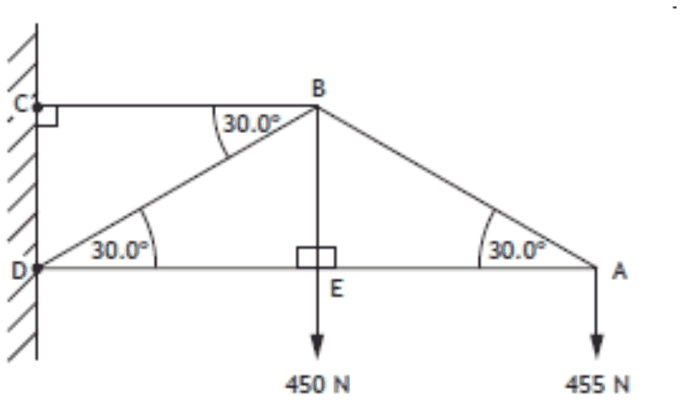
Name: ____________________
Teacher: __________________
Class: ____________________
Learning Intentions
- Resolving triangle/polygon of forces
- Resolving resultant forces for systems in equilibrium
- Solving reaction forces in simply supported beams:
- where loads are not exclusively vertical or horizontal
- with hinge and roller supports
- With uniformly distributed loads
- Nodal analysis of a frame
- Simultaneous equations of structures
Success Criteria
- I can resolve forces at and angle into their vertical and horizontal components using Pythagoras.
- I can find the unknown forces in a system by using one of 3 equations.
- I can solve equations with loads at an angle, hinge and roller supports and UDLs.
- I can complete a nodal analysis question to work out internal forces and their nature.
- I can complete simultaneous equations using my knowledge of Pythagoras and the 3 equations for equilibrium.
In this unit we will build on the skills learned in National 5 Engineering Science.
STRUCTURES
There are three main types of structure - mass, framed and shells.
Mass structures perform due to their own weight.
An example would be a dam.
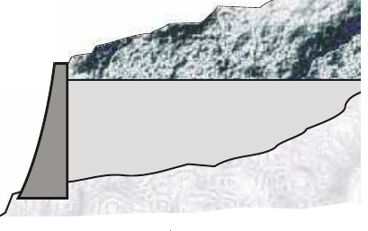
Frame structures resist loads due to the arrangement of its members. A house roof truss can support a load many times its own weight. Electricity pylons are good examples of frame structures.
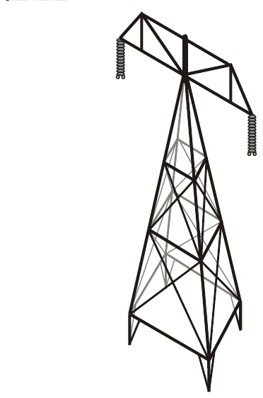
Shells are structures where its strength comes from the formation of sheets to give strength. A car body is an example of a shell structure.
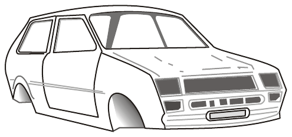
It is very important with any structure that we can calculate the forces acting within it so that a safe structure can be designed. Early structures were found to be successful due to the fact that they stayed up and many early structures are still with us, but many are not. The science of structures has been progressively improving over the centuries and it is now possible to predict structures behaviour by analysis and calculation. Errors can still be made, sometimes with catastrophic results.
These are the 3 equations we will use throughout this topic.
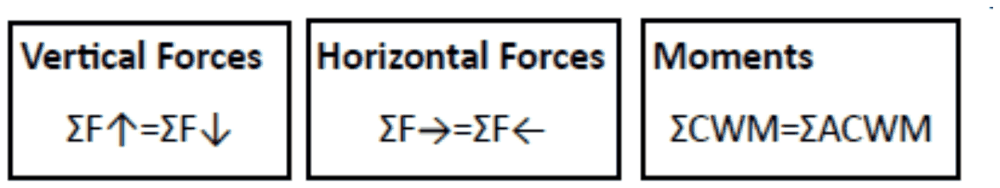
FORCES
In the structure below, three forces are acting on it.
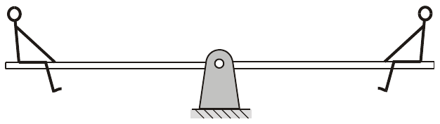
The diagram shown below can represent the forces in the above diagram.
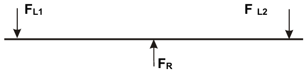
FL1 and FL2 represent the force exerted due to the mass of the people. FR is the reaction force. This type of diagram is known as a free-body diagram.
The reaction load FR is found by adding the two downward forces together.
In any force system the sum of the vertical forces must be equal to zero.
FR = FL1 + FL2
FR = 810N + 740N
FR = 1550N
RESOLUTION OF A FORCE
In some cases the loads may not be acting in the same direction, and cannot therefore be added together directly.
In the situation shown below the force is acting down at an angle.
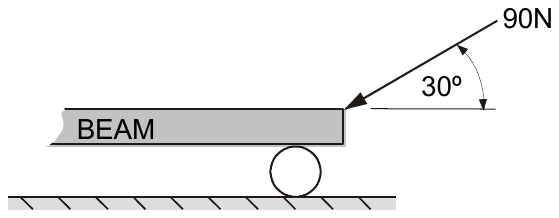
This force can be split into two separate components:
A vertical component FV.
A horizontal component FH.
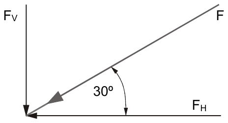
To resolve a force into its components you will have to know two things, its magnitude and direction.
Trigonometry is used to resolve forces.
Where - Hypotenuse = force, F
Opposite = vertical component, FV
Adjacent = horizontal component, FH
The diagram above can be redrawn as below.
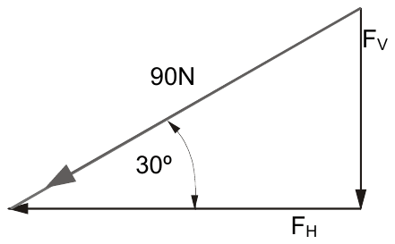
To find the horizontal force, FH
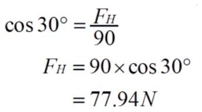
Horizontal force = 77.94 N
To find the vertical force, FV
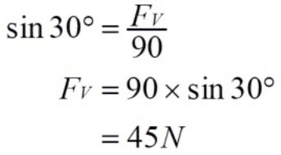
Vertical force = 45 N
Task - Resolution of Forces
1. Resolve the following forces into their horizontal and vertical components.
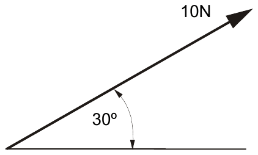
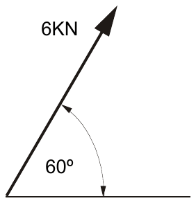
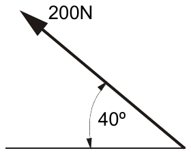
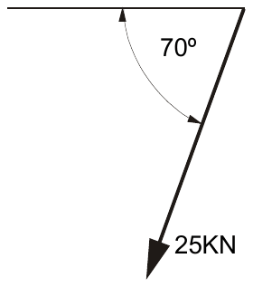
2. Find the resultant for these force systems. Find the horizontal and vertical components of each - add them up to find the overall component forces and then find the resultant.
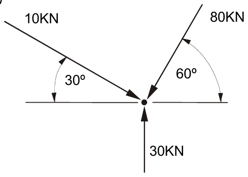
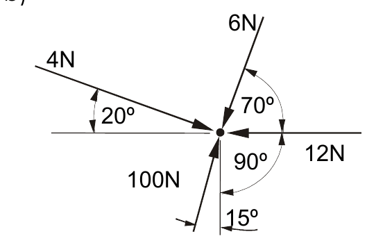
Task 1
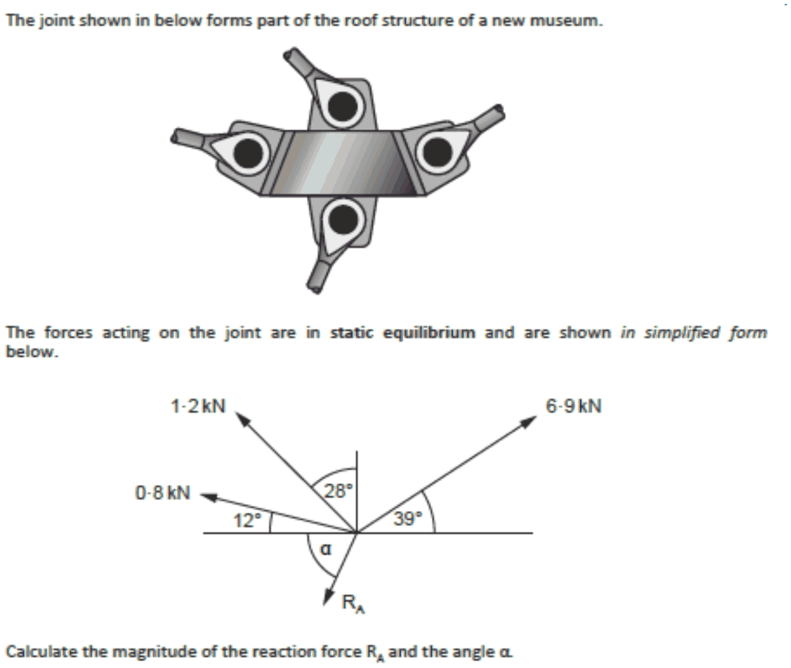
Task 2
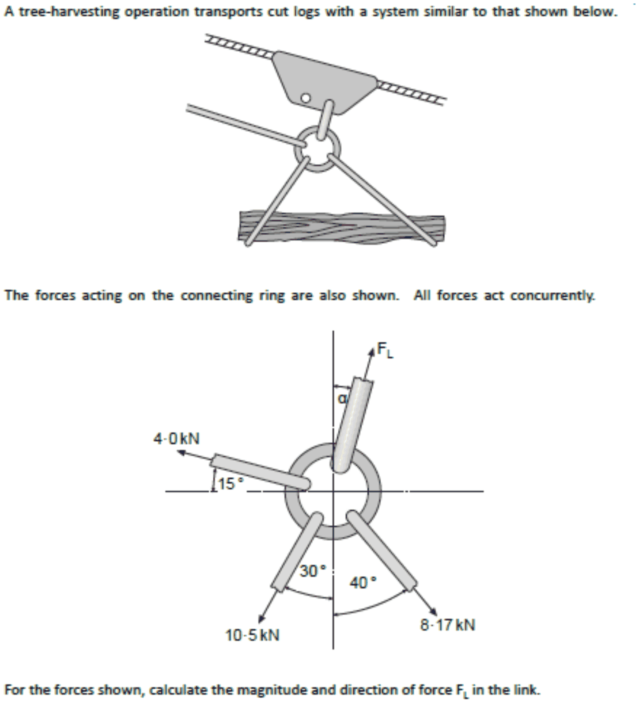
MOMENT OF A FORCE
The moment of a force is the turning effect of that force when it acts on a body
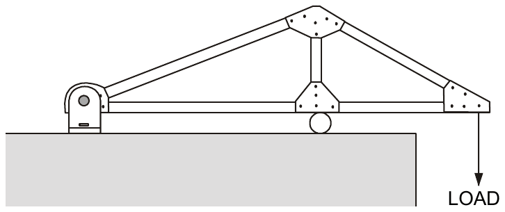
The load acting on the frame structure above will have a turning effect on the structure.
The Principle of Moments states that if a body is in Equilibrium the sum of the clockwise moments is equal to the sum of anti-clockwise moments.
Worked Examples
Example 1
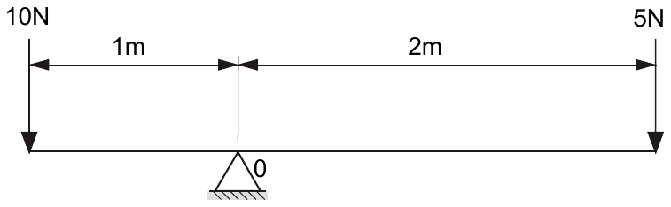
F x d = F x d
5 x 2 = 10 x 1
The above example is in equilibrium.
We can use this principle to find an unknown force or unknown distance.
Example 2
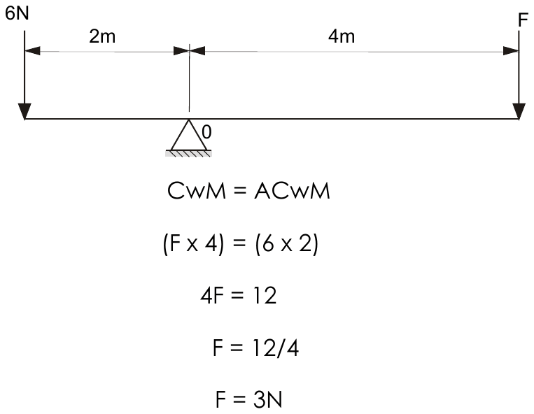
Assignments: Moments
The beams shown below are in equilibrium. Find the unknown quantity for each arrangement.
Question 1
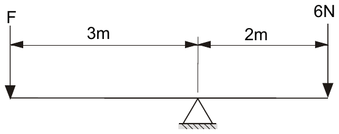
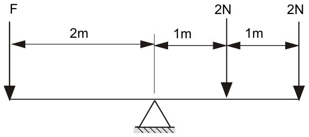
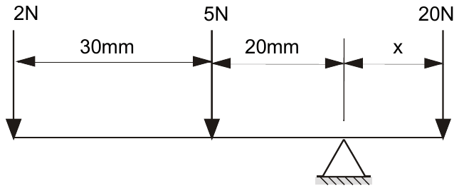
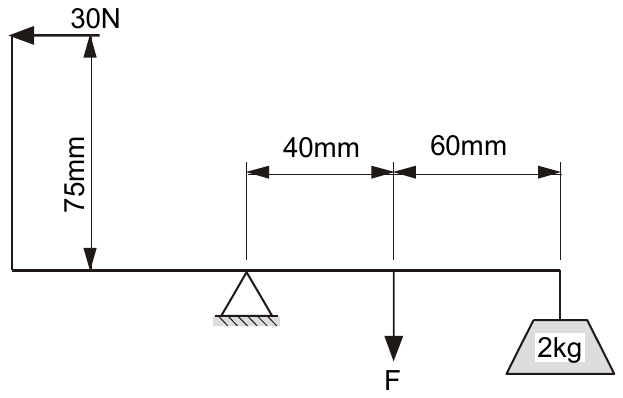
The following beams, in equilibrium, have inclined forces. Find the unknown quantity.
Question 2
a)
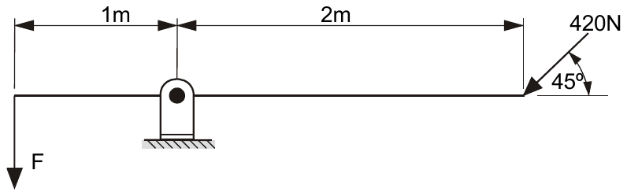
b)
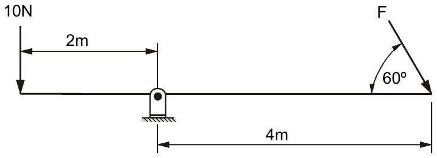
c)
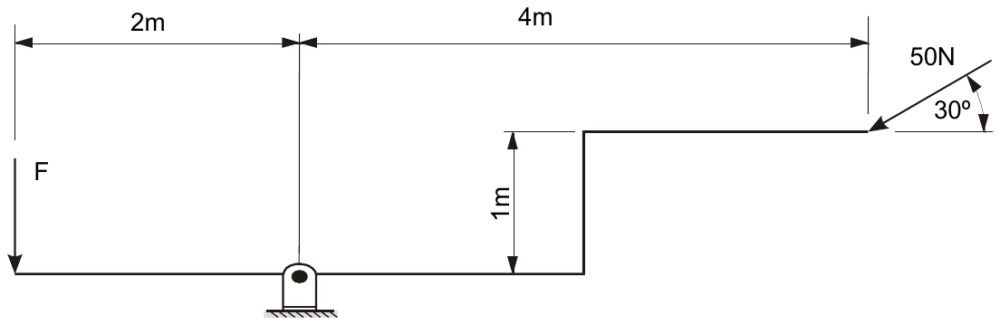
BEAM REACTIONS
We are now going to study beams with external forces acting on them. We shall resolve forces into their components and use moments to find the support reactions.
Definitions of some of the terms you have met already:
| RESULTANT | The resultant is that single force that replaces a system of forces. |
| EQUILIBRIUM | Equilibrium is the word used to mean balanced forces. |
Conditions of Equilibrium
- The sum of the Clockwise Moments = the sum of the Anti-Clockwise Moments
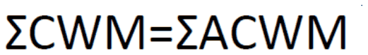
- The sum of the forces acting upwards equals the sum of the forces acting downwards.
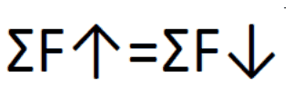
- The sum of the forces acting to the right equal the sum of the forces acting to the left.
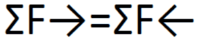
Beam Reactions
A beam is usually supported at two points. There are two main ways of supporting a beam -
1. Simple supports (knife edge)
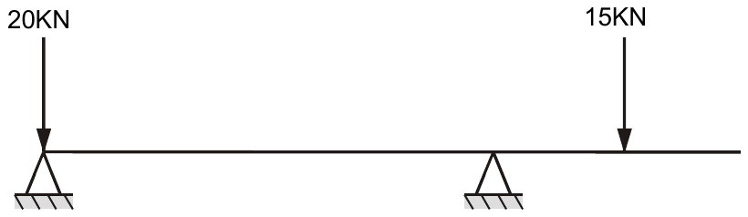
2. Hinge and roller
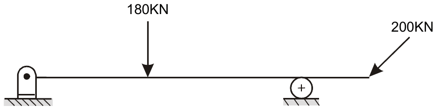
Worked Examples
1. SIMPLE SUPPORTS
Simple supports are used when there is no sideways tendency to move the beam.
Consider this loaded beam, “simply” supported.
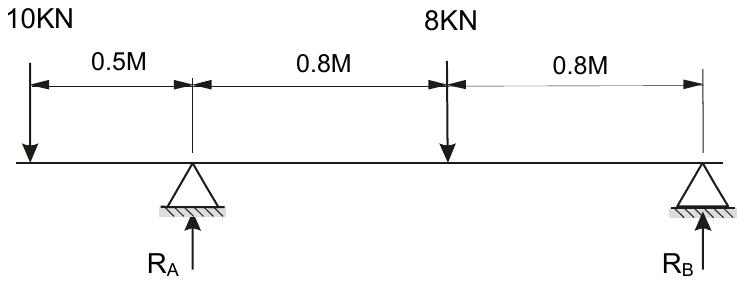
1. The forces at the supports called reactions, always act vertically.
2. The beam is in equilibrium; therefore the conditions of equilibrium apply.
The value of Reactions RA and RB are found as follows.
Take moments about RA
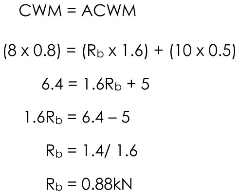
To find RA
Ra + Rb = 10 + 8
Ra = 18 - Rb
Ra = 18 – 0.88
Ra = 17.12kN
2. HINGE AND ROLLER SUPPORTS
Hinge and roller supports are used when there is a possibility that the beam may move sideways.
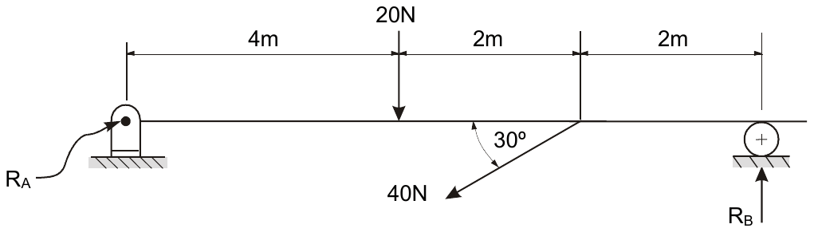
Note: The reaction at a roller support is always at right angles to the surface. The direction of RA is assumed. If any of the components work out as negative values then the direction will be opposite the assumed direction.
The reaction at the hinge support can be any direction.
(Find the two components of the hinge reaction, then the resultant)
There are three unknown quantities above: -
- The magnitude of Reaction RB.
- The magnitude of Reaction RA.
- The direction of Reaction RA.
Redraw as a free-body diagram showing vertical and horizontal components of the forces.
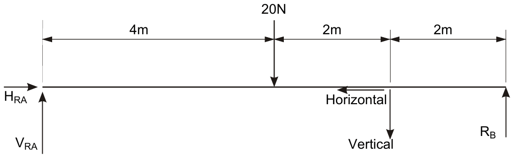
The vertical and horizontal components of the 40N force are found.
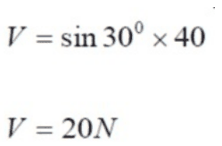
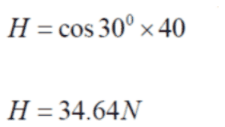
To find RB -take moments about VRA, this eliminates one of the unknown vertical forces.
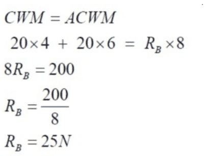
Vertical forces
Horizontal forces
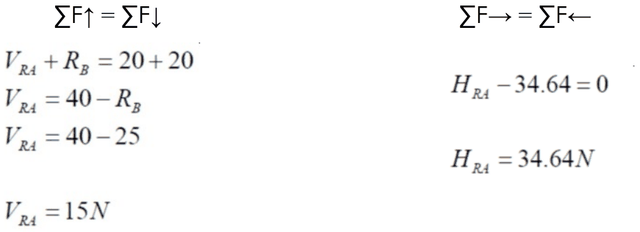
Use VRA and HRA to find RA
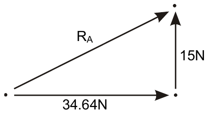
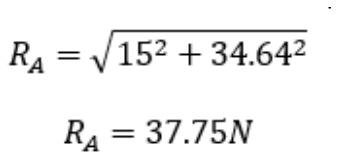
Find direction of RA
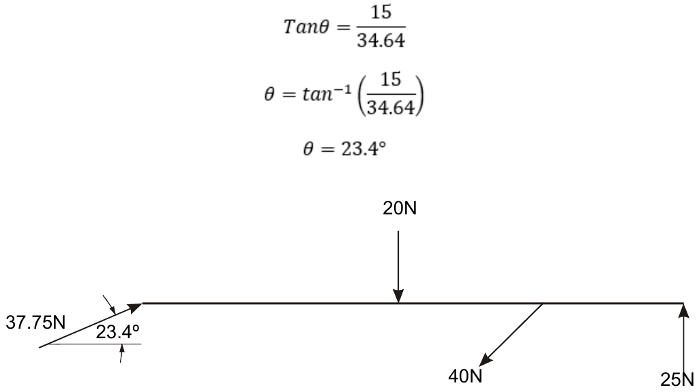
Assignments: Beam Reaction
1 Find the reactions at supports A and B for each of the loaded beams shown below.
a)
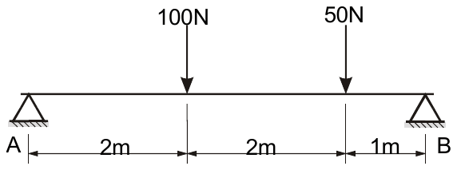
b)
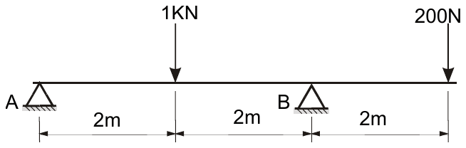
c)
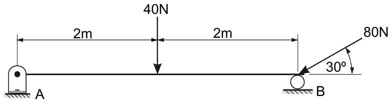
d)
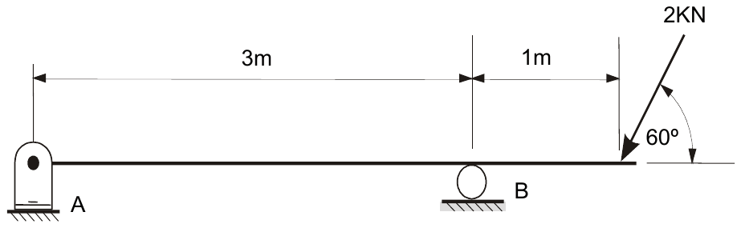
Task - Beam Reaction (continued)
2) Find the reactions at supports A and B for each of the loaded beams shown below.
a)
b)
FRAMED STRUCTURES
A frame structure is an assembly of members and joints (usually called Nodes) which is designed to support a load. Examples of frame structures include roof trusses, bridges, pylon towers.
The members in this framed structure can be as ties or struts, depending on the type of force they support.
STRUTS AND TIES
When solving problems in frame structures you will be required to determine the Magnitude and Nature of the forces in the members of the frame. That is, determine, in addition to the size of the force in the member, whether the member is a Strut or a Tie.
Strut
Members that are in compression, due to external forces trying to compress them, are known as Struts.
Tie
Members that are in tension, due to external forces trying to pull them apart, are known as Ties.
Nodal Analysis
There are several methods of solving frame structure problems. The method we shall use is called Nodal Analysis.
Any joint where members meet is known as a node.
This method relies on the fact that if structures are in equilibrium then each node will be in equilibrium. The sum of the forces acting on any the node will equal zero.
Nodes
The members are either in compression (strut) or tension (tie). They can be represented at the node as shown below –
FB is under compression and pushes into the node, FA is under tension and pulls away from the node.
Conditions of Static Equilibrium
| SUM OF THE MOMENTS = 0 | (∑Mo = 0) | ∑CWM = ∑ACWM |
| SUM OF THE VERTICAL FORCES = 0 | (∑FV = 0) | ∑F↑ = ∑F↓ |
| SUM OF THE HORIZONTAL FORCES = 0 | (∑FH = 0) | ∑F→ = ∑F← |
When solving frame structures some analysis of the structure is required to determine the best starting point and which of the conditions of static equilibrium to apply first.
Solving Simple Frame Structures
To help solve frame structure problems there are some simple rules to follow depending on the type of structure.
Cantilevered frame structures
For this frame structure it is not necessary to use moments to help find the forces in the members.
The node with the 900N load acting has only one unknown vertical component.
As all vertical forces acting on the node must equal zero then FV must equal 900N.
By using trigonometry it is now possible to find the other forces acting on this node.
In this example all nodes have more than one unknown force or component of a force.
To solve this frame structure take moments about the top support to find the reaction force at the roller support.
Truss frame structures
Treat structure like this as a beam and use moments to find reactions. Until the reaction forces are found all nodes have more than one unknown force or component.
Then start analysis at R1 or R2, which will now have only one unknown component.
Worked Example
For the crane shown below we shall find the forces in the members and the reaction forces at the wall.
Draw a free body diagram of the frame structure.
The framework is supported at two points. The hinge support at the top is being pulled away from the wall. R1 will act against this pull and keep the hinge attached to the wall. The roller support is being pushed into the wall. R2 will act against this force and in the opposite direction as shown below.
As member B is acting on a roller then R2 will be at 90º to member C
As R1 is acting at a hinge support there will be a vertical and horizontal component. At this stage guess the direction of R1.
If a wrong assumption about the member being in tension or compression or the direction of a force is made then a negative value will be produced from the calculation. If this is the case the direction of the force is simply reversed
To find the forces in the members and the reactions at the supports, study each of the structure nodes separately.
Each node is in equilibrium so we can use the conditions of equilibrium.
| SUM OF THE VERTICAL FORCES = 0 | ∑FV = 0 | ∑F↑ = ∑F↓ |
| SUM OF THE HORIZONTAL FORCES = 0 | ∑FH = 0 | ∑F→ = ∑F← |
| SUM OF THE MOMENTS = 0 | ∑Mo = 0 | ∑CWM = ∑ACWM |
In this sort of problem where the structure is cantilevered out from the wall, it is normally solvable without considering the moments. Start by finding a node that has only one unknown vertical or horizontal component.
Node 1
The forces acting on node 1 are shown below.
Note - an assumption has been made about the direction of FA and FB.
FA is assumed to be in tension and acting away from the node 1.
FB is assumed to be in compression and acting in towards the node 1.
Split FB into its horizontal (FHB) and vertical (FVB) components.
Apply a condition of static equilibrium -
As the sum of Vertical forces is equal to zero then the vertical component of FB (FVB) is 1000N acting up.
From this we can find FB - we can redraw FB and the two components FHB and FVB to form a triangle as shown below.
The force in member A (FA) will equal and opposite to FHB.
Find FHB
From above FA = 1732N
This diagram shows all the forces acting at node 1.
Worked Example (continued)
Node 2
There are three forces acting at node 2.
During analysis of node 1, FB was found to be 2000N and was not negative so the assumed direction towards the node (compression) was correct.
In node 1, FB is shown to be acting as a compressive force towards the node with a magnitude of 2000N.
FC will be equal and opposite to the Vertical component of FB (FVB).
From analysis of node 1 FVB was equal to 1000 N therefore -
As R2 is a roller support the reaction will be at 90° to the surface.
R2 will be equal to the Horizontal component of FB.
From above HB was equal to 1732 N therefore -
The forces acting at node 2 are shown below.
Node 3
Node 3 has three forces acting on it.
R1 will be equal and opposite to the resultant of FA and FC.
From analysis of node 1 FA was found to be 1732N.
From analysis of node 2 FC was found to be 1000N
Find resultant of FA & FC - FR
Find angle of resultant (θ) -
The task was to find the forces in the members and the reactions forces at the supports. The results can be shown as below -
| MEMBER | FORCE | TYPE OF FORCE |
|---|---|---|
| A | 1732N | TENSION |
| B | 2000N | COMPRESSION |
| C | 1000N | TENSION |
Assignment 1
Find the reactions R1 and R2 and the forces for the members in the frame structure shown below.
The free body diagram with the nodes and members labelled is given below.
In this type of problem where the structure is acting as a beam, find R1 and R2 using moments.
Take moments about R1 -
Now complete this task and find R1 and the forces in A, B and C.
Assignment 3
Calculate reactions and find the magnitude and nature of forces in the members in the lighting gantry structure shown below.
Frame Structures
Task 1
Task 2
Task 3
Task 4
Uniformly distributed load
A uniformly distributed load (UDL) is a load which is spread constantly along the length of a beam. In practice, this is the usual type of load a beam will require to support.
The load is given in terms of the total force acting on each metre length of the beam i.e. kN m-1.
In order to calculate the forces acting on the beam, it is assumed that the UDL acts centrally on the beam as a single force.
Worked Example
Calculate the force acting on the beam.
200 x 3 = 600 N acting in the centre of the beam (i.e. 1.5 m from the end).
The diagram can be redrawn as shown below.
UDLs
Calculate RA and RB for each of the questions below.
Simultaneous Equations
Task 1
Task 2
2023 Past Paper
2023 Past Paper
2023 Past Paper
2023 Past Paper
2023 Past Paper
2023 Past Paper